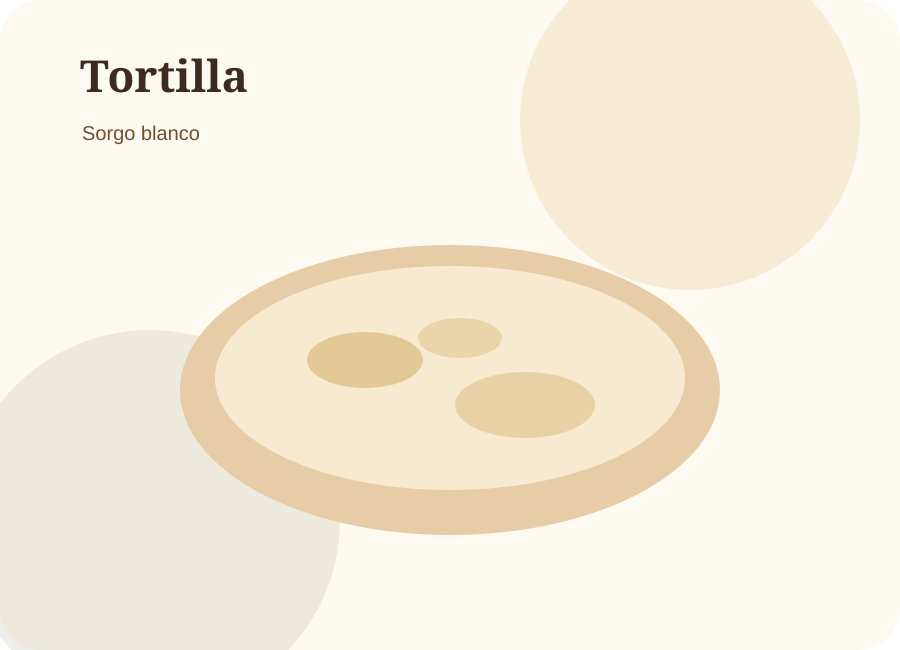
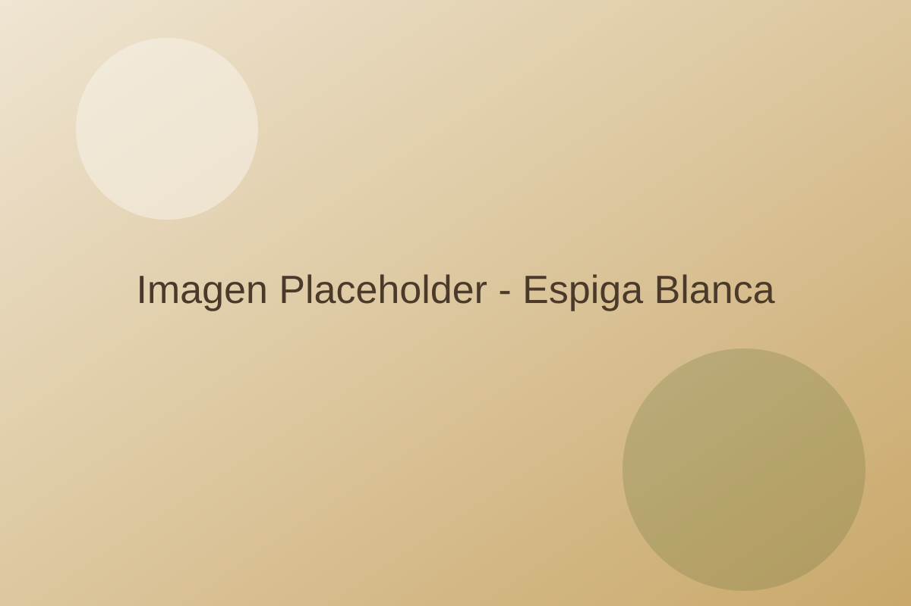

Tortilla de sorgo blanco
Una alternativa suave, versátil y diferente para acompañar tus comidas diarias.
PedirEspiga Blanca
Una alternativa diferente para la mesa mexicana: productos elaborados con sorgo blanco, hechos con calidad, identidad regional y visión de futuro.
Espiga Blanca nace para ofrecer una alternativa nutritiva y regional dentro de la alimentación diaria mexicana. Nuestro punto de venta es nuestro primer canal, pero nuestra visión es crecer como una empresa de alimentos, harina especializada y soluciones para producir tortilla de sorgo blanco.
No buscamos reemplazar la tortilla de maíz. Buscamos abrir una nueva opción, respetando la tradición y explorando el potencial del sorgo blanco como alimento mexicano moderno.

Una alternativa suave, versátil y diferente para acompañar tus comidas diarias.
Pedir
Crujientes y prácticas para botanas, antojitos y preparaciones cotidianas.
Pedir
Textura ideal para compartir: un snack con identidad regional y sabor auténtico.
Pedir
Formatos y volumen para cocinas, comedores y negocios gastronómicos.
Solicitar
Desarrollamos bases funcionales para facilitar producción con consistencia.
Me interesaCada lote nos ayuda a mejorar textura, sabor, rendimiento y consistencia. Nuestro proceso combina oficio, observación y desarrollo constante.
Nuestros productos están elaborados con sorgo blanco, un grano naturalmente libre de gluten y con potencial alimenticio interesante. La información nutrimental exacta depende de la formulación final y será actualizada con base en análisis o cálculo profesional.
| Tamaño de porción | [pendiente] |
|---|---|
| Calorías | [pendiente] |
| Carbohidratos | [pendiente] |
| Proteína | [pendiente] |
| Grasas | [pendiente] |
| Fibra | [pendiente] |
| Sodio | [pendiente] |
| Ingredientes | [pendiente] |
Los valores nutrimentales serán confirmados con base en la formulación final del producto.
Queremos que Espiga Blanca sea una marca que conecte el campo, la alimentación diaria y nuevas oportunidades de negocio alrededor del sorgo blanco.
También atendemos pedidos para restaurantes, cocinas, tiendas, eventos y negocios interesados en productos de sorgo blanco. Contáctanos para conocer opciones de suministro, pedidos especiales o colaboración.
Solicitar información
Espacio para Google Maps